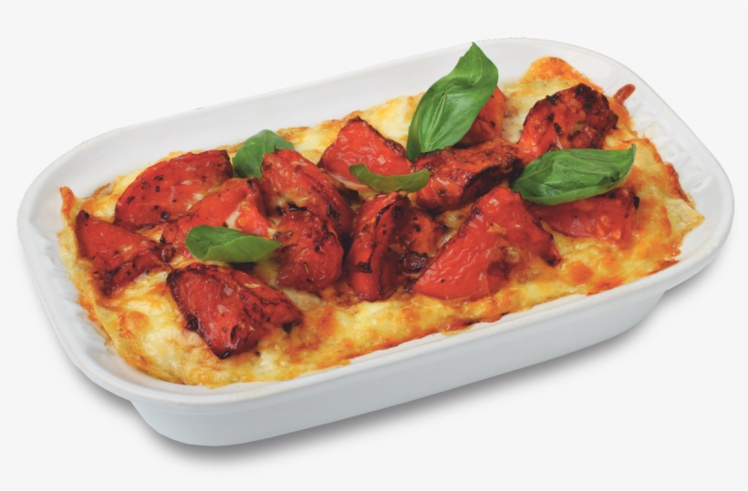

Chicken Lasagna

Description
Chicken lasagna with spinach and a creamy white cheese sauce. Great for any kind of potluck.
Ingredients
- 9 Lasagna Noodles
- 1/2 Cup butter
- 1 onion, chopped
- 1 close garlic, minced
- 1/2 cup all purpose flour
- 2 cups chicken broth
- 1 1/2 cups milk
- 4 cups shredded mozarella cheese
- 1 cup grated parmesan cheese
- 2 cups ricotta cheese
- 2 cups cubed, cooked chicken meat
- 2x10 ounce frozen chopped spinach, thawed and drained
- 1 tbsp chopped fresh parsley
Steps:
- Step 1:Preheat the oven to 350 degrees F (175 degrees C).
- Step 2:Bring a large pot of lightly salted water to a boil. Add lasagna noodles and cook for 8 to 10 minutes or until al dente; drain and rinse with cold water.
- Step 3:Melt butter in a large saucepan over medium heat; stir in onion and garlic. Whisk in flour until lightly browned and onion is tender, about 2 minutes. Add chicken broth, milk, and salt; cook, whisking continuously, for 1 minute.
- Step 4:Stir in 2 cups mozzarella and 1/4 cup Parmesan until well combined. Season with basil, oregano, and black pepper; remove from heat and set aside.
- Step 5:Spread 1/3 of the sauce mixture in the bottom of a 9x13-inch baking dish. Layer with 3 lasagna noodles, ricotta, and chicken. Arrange 3 lasagna noodles over the chicken and layer with 1/3 of the sauce mixture, spinach, remaining 2 cups mozzarella, and 1/2 cup Parmesan. Arrange remaining noodles over cheese and spread remaining sauce evenly over noodles. Sprinkle with parsley and remaining 1/4 cup Parmesan.
- Step 6:Bake in the preheated oven for 35-40 mins